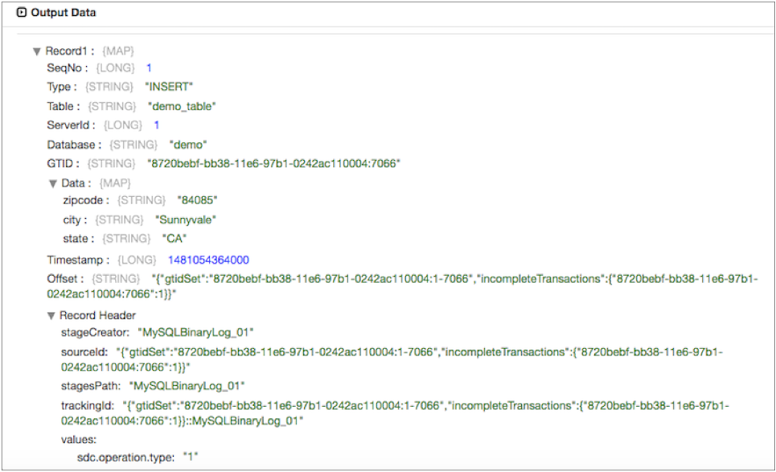

MySQL Binary Log
Supported pipeline types:
|
The MySQL Binary Log origin acts as a MySQL replication slave. MySQL replication allows you to maintain multiple copies of MySQL data by copying the data from a master to a slave server. The origin uses the replication process to capture changes from the MySQL master database and then pass the changed data to a Data Collector pipeline.
The origin can process binary logs from a MySQL server that has Global Transaction Identifier (GTID) enabled or disabled. A GTID is a unique transaction ID assigned to every transaction that happens in the MySQL server database.
MySQL Binary Log processes only change capture data. The origin creates records for the INSERT, UPDATE, and DELETE operations. The origin produces one record for each change noted in the binary logs.
The generated record includes a map of fields of CDC information. It also includes the CRUD operation type in a record header attribute so generated records can be easily processed by CRUD-enabled destinations. For an overview of Data Collector changed data processing and a list of CRUD-enabled destinations, see Processing Changed Data.
When needed, you can use a JDBC Query Consumer or a JDBC Multitable Consumer in a separate pipeline to read existing data from the MySQL database before you start a pipeline with a MySQL Binary Log origin. When necessary, you should also configure the MySQL Binary Log pipeline to modify the generated records. Of the CRUD-enabled destinations, only the Kudu and JDBC Producer destinations include a Change Log Format property that enables processing MySQL Binary Log records as generated.
Before you configure the origin, you must complete several prerequisites.
When you configure MySQL Binary Log, you configure the database server from which to read the log files. You can configure the origin to read the binary log files from the beginning, or you can specify an offset to determine where the origin starts reading data.
You specify the credentials to use to connect to MySQL server. You can also configure advanced properties, such as Keep Alive thread properties, and tables that the origin includes or ignores during processing.
Prerequisites
- Configure MySQL server to use row-based logging.
- Enable
mysql_native_passwordauthentication. - Install the MySQL JDBC driver.
Configure MySQL Server for Row-based Logging
The MySQL Binary Log origin can process binary logs from a MySQL server configured to use row-based logging.
Before you use the origin, verify that the binary log format for the MySQL server is set to ROW. For instructions, see Setting the Binary Log Format in the MySQL documentation.
Enable the Required Authentication
MySQL supports a range of authentication plugins. The MySQL Binary Log origin requires
using the mysql_native_password plugin, which was the default
authentication for earlier versions of MySQL. In MySQL 8.0,
caching_sha2_password became the default authentication plugin.
To use the MySQL Binary Log origin, the MySQL account specified in the origin must use
the mysql_native_password authentication plugin. This can be the case
when the MySQL server is configured to use the authentication plugin.
When the server uses a different authentication plugin, you can configure a user account
to use the mysql_native_password authentication plugin.
mysql_native_password plugin:
ALTER USER '<user>'@'<database>' IDENTIFIED WITH mysql_native_password BY '<password>'Specify the user name, database name, and password to use. Then, use these details when you configure the origin.
For information about the mysql_native_password authentication plugin,
see the MySQL documentation.
Install the JDBC Driver
Before you use the MySQL Binary Log origin, install the MySQL JDBC driver. You cannot access the database until you install the required driver.
The MySQL JDBC driver must be located in a MySQL Binary Log subdirectory of the external
directory for additional drivers. For example:
/opt/sdc-extras/streamsets-datacollector-mysql-binlog-lib/lib/.
For information about installing additional drivers, see Install External Libraries.
Initial Offset
You can configure the origin to start reading the binary log file from the beginning of the file or from an initial offset in the file.
The initial offset is the point in the binary log file where you want to start processing. When you start the pipeline, the MySQL Binary Log origin starts processing from the initial offset and continues until you stop the pipeline.
The format that you use to configure the initial offset depends on whether MySQL server is enabled for Global Transaction Identifiers (GTID):
- GTID enabled
-
When the database is enabled for GTID, the MySQL Binary Log origin expects the initial offset to contain a GTID using the following format:
<source_id>:<transaction_id>For example, to begin reading the binary log file at the GTID
8720bebf-bb38-11e6-97b1-0242ac110004:7066, you simply enter that GTID for the offset. - GTID disabled
- When the database is disabled for GTID, the MySQL Binary Log origin expects the
initial offset to contain both the binary log file name and a position within
the file. Use the following format to configure the
offset:
<binary log file name>:<position>
When the pipeline stops, the MySQL Binary Log origin notes the offset where it stops reading. When the pipeline starts again, the origin continues processing from the last saved offset. You can reset the origin to process all requested objects.
Generated Records
Each generated record includes the following information:
- CRUD operation type
- The CRUD operation type is stored in the Type record field and also in the
sdc.operation.typerecord header attribute. - Change data capture information
- The change data capture information is stored in the following record fields:
- BinLogFilename - when GTID is disabled
- BinLogPosition- when GTID is disabled
- SeqNo - when GTID is enabled
- GTID - when GTID is enabled
- Table
- ServerId
- Database
- Timestamp
- Offset
- New data
-
Fields that contain new data to be inserted or updated appears in a Data map field.
- Changed data
- Fields that contain old data to be updated, or fields in a delete record appear in an OldData map field.
For example, the origin generates the following record when it reads from binary log files for a MySQL server with GTID enabled:

Processing Generated Records
Due to the structure of the MySQL binary log records, you might want to use processors to restructure the record and remove any unnecessary fields. Of the CRUD-enabled destinations, only the Kudu and JDBC Producer destinations include a Change Log Format property that enables processing MySQL Binary Log records as generated.
For example, MySQL binary log records include CDC data in record fields. If you are using a destination other than Kudu and all you need is record data, you can use a Field Remover to remove the unwanted fields.
Similarly, update records include the previous data in an OldData map field, and the updated data in a Data map field. If all you need is the updated data, you can use the Field Remover to drop the OldData field from the record. And you could use a Field Flattener processor to flatten the fields in the Data field.
Tables to Include or Ignore
The binary log file captures all changes made to the MySQL database. If you want the MySQL Binary Log origin to capture changes from a subset of tables, you can configure the origin to include changes from specific tables or to ignore changes from specific tables.
<database name>.<table name>sales.orders,sales.customersIf you enter the same value in the Ignore Tables property, the origin captures changes from all tables in the log file, except for the orders and customers tables in the sales database.
The Ignore Tables property takes precedence. If you include a table in both properties, the origin ignores the table.
Configuring a MySQL Binary Log Origin
Configure a MySQL Binary Log origin to process change data capture (CDC) information provided by MySQL binary logs. Be sure to complete the necessary prerequisites before you configure the origin.